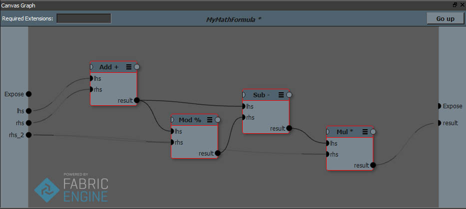

Polymorphic （多態性）ノード¶
注釈
より詳しい技術的詳細はプログラマガイド内 多態性を持つノード（Polymorphic nodes） を参照してください。
Canvas内のノードは複数の型に変型する事ができます。ポリモーフィックな（多態性を持つ）ノードは複数のデータ型をサポートします。ポリモーフィックなポートははじめに黒色に表示されています。これはまだデータ型が決定されていないことを示します。ポートに接続があるとそのデータ型の色に変色します。

注釈
ポリモーフィックなプリセットはKL拡張それぞれのカテゴリ以下の Func にあり、例えば Func.unit とすることで見つけることができます。
ポリモーフィズムはサブグラフ内でも同様に機能します。サブグラフで定義される全てのポートは接続がなされるまでディフォルトでポリモーフィックです。このようなポート同士接続を行うとデータ型が実際に指定されるまでポリモーフィックを保ったままのサブグラフを形成できます。
